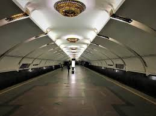
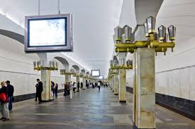
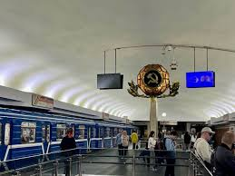
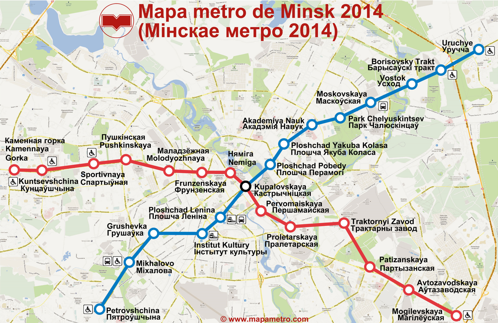
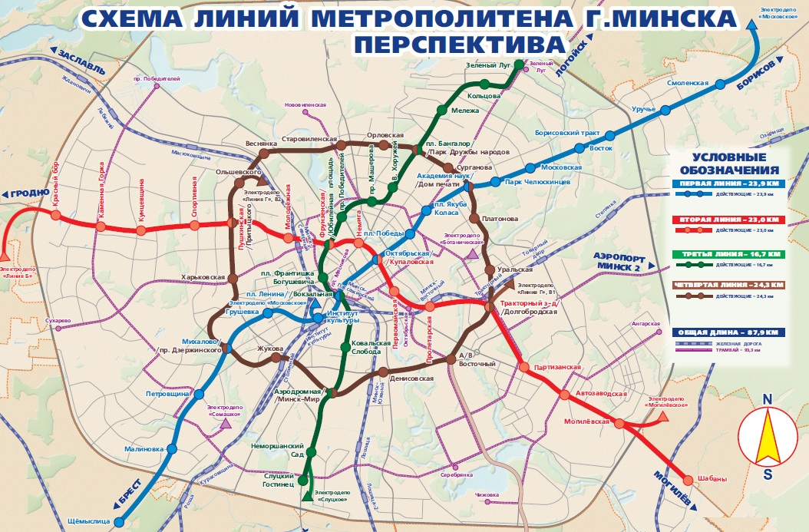
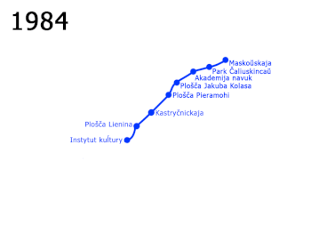

Минское метро — важнейшая транспортная артерия столицы Беларуси, которая обеспечивает быстрые и удобные перемещения по городу. История его создания начинается в середине XX века. В то время Минск быстро рос и развивался как промышленный и культурный центр, и население города превысило миллион человек. В результате увеличения количества жителей и активной урбанизации возникла острая необходимость в создании быстрого, доступного и вместительного общественного транспорта. После обсуждений и детального планирования было принято решение построить метрополитен, который мог бы справляться с возрастающим пассажиропотоком. Первоначальные планы строительства метро начали формироваться в 1960-е годы, а первые реальные шаги к воплощению проекта были предприняты в 1977 году, когда начались строительные работы. Это был сложный и амбициозный проект: рабочим приходилось решать многочисленные инженерные задачи, связанные с особенностями минских почв. Несмотря на трудности, к 30 июня 1984 года первая линия метро была готова и открыта для пассажиров. Первая линия, названная Московской, состояла из восьми станций и соединила северо-восточные и юго-западные районы города. Её протяженность составила около 12,5 километров. За первые месяцы работы метрополитен перевёз сотни тысяч пассажиров, что продемонстрировало эффективность и востребованность этого транспорта.



В 1990-е годы Минск продолжил расширять свою подземную транспортную сеть. В 1990 году была запущена вторая линия — Автозаводская, соединившая южные и северные районы. Сегодня её протяжённость составляет 17,2 километра, а на линии расположено 14 станций. Постепенно новые станции и линии метро позволили жителям Минска значительно сократить время на перемещения по городу. В 2020 году открылась третья линия — Зелёналужская, которая добавила к сети ещё 4 станции и соединила ранее неохваченные районы города. Планируется, что к 2030 году в Минске будет построено ещё несколько станций, и общая длина всех линий составит около 60 километров. В настоящее время Минское метро ежедневно перевозит более 800 тысяч пассажиров. В сети метро насчитывается 33 станции, а общая протяженность линий составляет около 41 километра. Каждая станция имеет уникальный дизайн, отражающий культурные и исторические черты города и страны: например, станции украшены мозаиками, скульптурами и декоративными элементами, символизирующими различные эпохи белорусской истории.

Минское метро само по себе неглубокое. Но есть в городе одно место, где метростроевцы не спускались под землю и не вгрызались лопатами в грунт, а проложили тоннель прямо по поверхности. Этот участок — часть перегона между станциями «Пролетарская» и «Тракторный завод». Если выйти на «Пролетарской» и пойти на восток по улице Судмалиса, то через 10 минут окажешься на пустыре, на первый взгляд, ничем не примечательном. Пройдя немного вперед и осмотревшись по сторонам, понимаешь, что стоишь на вытянутой в длину возвышенности. И тут, шагая по тропе, можно внезапно почувствовать легкую вибрацию — прямо под ногами проносятся электропоезда.
Когда поезда прибывают на «Пролетарскую», все пассажиры устремляются в западный конец платформы. На восточном выхода нет — только мраморная стена и скульптура бравого пролетария. Однако стена эта, хоть и выглядит основательно, вовсе не глухая. За ней расположены вестибюль, кассы, есть даже будка контролера. Все это было создано в годы строительства второй линии. Постройка не очень-то похожа на вход в метро, скорее напоминает спуск в защитное укрытие гражданской обороны. Металлические двери наглухо заварены. Почему второй выход не используется? Скорее всего, строили его с заделом на будущее, а пока открывать вестибюль ради нескольких трехэтажных домов смысла нет. Пассажиропоток в этом направлении будет минимальным.
Перед самым въездом на «Октябрьскую» со стороны «Площади Победы» поезд замедляется и, стоя справа, вглядываясь в «пляшущие» по стене вереницы проводов, можно рассмотреть кое-что необычное. Тоннель расширяется и раздваивается — еще одни рельсы уходят непонятно куда. Есть даже смешная легенда о том, что этот тоннель ведет в засекреченную ветку метро. На самом деле никаких секретов здесь нет. Под Октябрьской площадью существует служебный соединительный тоннель длиной около 250 метров, позволяющий ночью перемещать поезда с одной линии метро на другую для отправки в депо. Днем составы по этому тоннелю не ездят, хотя в теории машинист может объявить на «Площади Победы»: «Следующая станция — Немига». И через пару минут пассажиры в полном недоумении прибудут на Автозаводскую линию
Еще одно загадочное место минской подземки — общий вестибюль станций «Октябрьская» и «Купаловская», где стоят старые неработающие турникеты. Если идти от эскалатора — они по левую руку, а за ними закрытые наглухо двери. Что за ними? По одной из версий, при строительстве «Октябрьской» проектировался выход в Александровский сад, но его так и не доделали, опять же из-за малого пассажиропотока. С другой стороны, если никакого выхода нет, то для чего ставили турникеты? Существует и вторая версия: за дверями находится пешеходный тоннель, соединяющий вестибюль с торговым центром над станцией «Октябрьская».
Пожалуй, самая известная легенда минского метро — недостроенная станция «Комсомольская», якобы расположенная между «Октябрьской» и «Площадью Ленина». Планы по ее сооружению возле здания КГБ — вовсе не слухи, а историческая данность. Об этом позволяет судить редчайший документ – едва ли не первая схема метрополитена от 1975 года с обозначенной «Комсомольской». Почему же «Комсомольскую» так и не построили? Очевидно, одним из главных аргументов против стал слишком короткий перегон между станциями.
На основании генерального плана белорусской столицы разработана «Комплексная транспортная схема г.Минска», частью которой является «Схема развития Минского метрополитена». По указанному плану Минский метрополитен будет состоять из четырех линий, общей протяженностью 87,9 км, и насчитывать 64 станции. Первая линия (15 станций) связывает жилые массивы юго-западной и северо-восточной частей города Минска с центром и железнодорожным вокзалом. В перспективе расширение линии планируется по направлениям: северо-восточное – станция «Смоленская», юго-западное – станция «Щёмыслица». Вторая линия (14 станций) связывает жилые районы северо-западной части столицы с центром и промышленной зоной, находящейся на юго-востоке. Запланировано продление линии: западное направление – станция «Красный Бор», юго-восточное направление – станция «Шабаны». Третья линия (4 станции: «Ковальская Слобода», «Вокзальная», «Площадь Франтишка Богушевича», «Юбилейная площадь») обеспечивает транспортный треугольник с вершинами в пересадочных узлах на станциях «Октябрьская» – «Купаловская», «Площадь Ленина» – «Вокзальная» и «Фрунзенская» – «Юбилейная площадь». Ведутся работы по продлению линии: южное направление – станции «Аэродромная», «Неморшанский Сад», «Слуцкий Гостинец». В перспективе третья линия Минского метрополитена, протяженность 16 км, будет состоять из 14 станций. Линия соединит южный и северный секторы Минска с центральной частью города. Первый участок третьей линии Минского метрополитена от станции «Слуцкий Гостинец» до станции «Юбилейная площадь», протяженностью 7,6 км, с 7 станциями позволит обеспечить скоростной транспортной связью с другими районами города жилой район «Курасовщина», а также деловой район «Минск-Мир», размещаемый на территории бывшего аэропорта «Минск-1». Проектом предусмотрено создание крупнейшего в городе транспортно-пересадочного узла в границах Южной привокзальной площади, включающего в себя пересадку между первой и третьей линиями метрополитена, пешеходные связи метрополитена с железнодорожной станцией Минск-Пассажирский, перспективной железнодорожной станцией пригородных поездов юго-западного направления. Четвертая линия Минского метрополитена будет состоять из 17 станций, протяженностью 25,4 км. Трасса линии дублирует второе автотранспортное городское кольцо. Линия будет пересекаться с первой, второй, третьей линиями метрополитена. Строительство четвертой линии позволит: окончательно решить вопрос разгрузки пересадочного узла между первой и второй линиями, реализовать концепцию создания транспортно-пересадочных узлов между всеми видами городского и пригородного транспорта.

Музей истории Минского метрополитена торжественно открыт 11 сентября 2015 года. Экспозиция расположена на станции метро «Могилевская» сразу за турникетами на уровне кассовых залов. Площадь двух залов музея, стилизованных под вагоны метро, составляет более 150 квадратных метров. Наиболее популярны среди посетителей музея следующие экспонаты: настоящая кабина машиниста (внутри которой может побывать каждый желающий), фрагмент пути с дефектоскопной тележкой (устройство для проверки рельсов на наличие дефектов), пульты централизации (диспетчерский и станционные), аппарат для размена монет, коллекция жетонов, символические ключи от станций и многое другое. Кстати, после открытия музея этому событию был посвящен сувенирный жетон метро. Среди экспонатов также: форма одежды работников метро, аппараты связи, счетная техника, почтовые марки, проездные билеты и различные интересные сувениры, подаренные почетными гостями. Посетители музея могут посмотреть различные видеофильмы об истории и развитии Минского метрополитена, а также анимационные ролики по Правилам безопасного поведения в метро. Особое место занимают многочисленные фотоснимки, запечатлевшие наиболее важные события из истории столичной подземки. Среди них: все этапы строительства метро, пропуск первого пробного поезда в марте 1984 года и торжественная церемония пуска Минского метрополитена 29 июня 1984 года (эта дата и является днем образования белорусского метро). Музей интересен не только минчанам, но и гостям столицы. Об этом свидетельствуют посещения музея жителями других городов и стран, как ближнего, так и дальнего зарубежья. Ежегодно музей метрополитена принимает свыше 6 тысяч человек.
